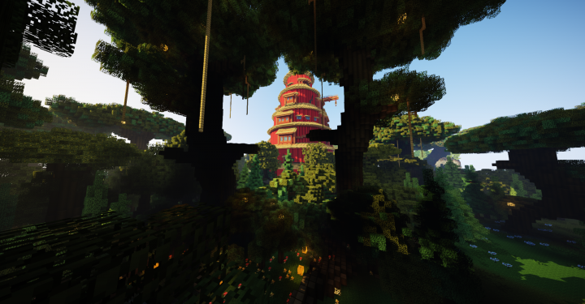
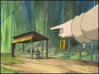
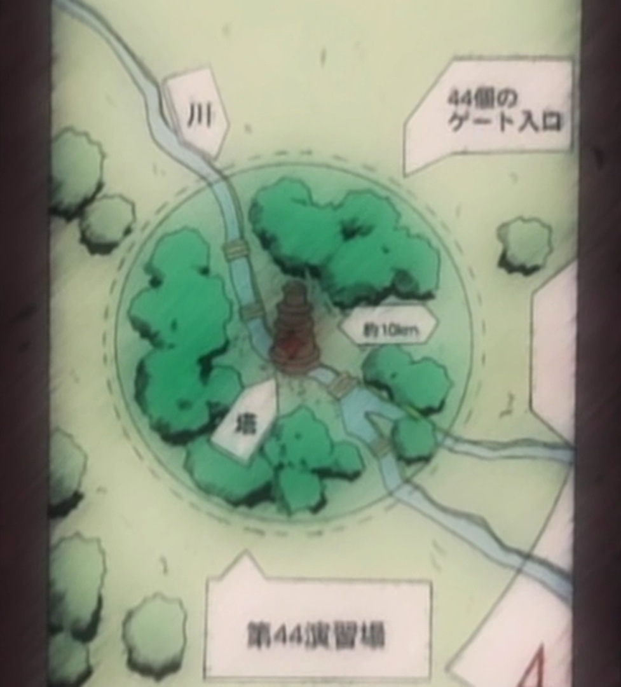

La Foret de la Mort
 La Forêt de la Mort (死の森, Shi no Mori), aussi connue comme la Zone d'entraînement n° 44, fut le lieu où se déroula la seconde épreuve de l'Examen Chûnin se déroulant à Konoha, dont l'examinatrice était Anko Mitarashi. Cette seconde épreuve permet essentiellement aux Genins désirant devenir Chûnins de tester leurs aptitudes à la survie en milieu hostile. En effet, il s'agit d'un lieu très dangereux à cause de la faune et de la flore qui l'habitent (souvent géantes et venimeuses)
 Il existe en tout quatre entrées pour accéder à la forêt. Une clôture métallique entoure son périmètre avec 44 portes toutes aussi espacées les une des autres, on peut aussi trouver le trèfle à quatre feuilles (qu'on voit dans l'OAV 1). La forêt est immense avec un rayon d’environ dix kilomètres, au centre se trouve une tour, qui est, dans examen des Chûnins, la destination des ninjas une fois qu'ils avaient recueilli deux parchemins. À l'intérieur de la tour centrale se trouve une arène dans laquelle les préliminaires de la troisième épreuve se tinrent, étant donné le trop grand nombre d'équipes ayant réussi la seconde épreuve.
Chaque équipe recevait soit un rouleau de la Terre, soit un rouleau du Ciel, et devait trouver un rouleau de l'autre sorte : c'est-à-dire le subtiliser à une autre équipe d'une manière ou d'une autre. L'épreuve devait durer cinq jours. Avant le début de l'épreuve, les concurrents devaient signer un document certifiant qu'ils étaient conscients du danger et statufiant que les examinateurs ne seraient pas tenus pour responsables en cas de décès. Une autre règle est qu'il ne fallait surtout pas ouvrir les parchemins car la personne qui en ouvrait ne serait-ce qu'un seul resterait endormie jusqu'à la fin de l'épreuve. Sept équipes réussirent l'épreuve avec succès mais, une fois dans la tour ils durent à nouveau se battre dans l'arène car trop de personnes avaient réussi l'épreuve selon les examinateurs et il fallait donc en éliminer quelques-uns. C'est pendant cette épreuve, et dans cette forêt, qu'Orochimaru déposa son sceau maudit sur Sasuke.
👉🏽 L'une des créatures de la forêt de la mort était un mille-pattes géant. Cela rappelle la légende japonaise de l'ōmukade, un mille-pattes géant mangeur d'humains qui vit dans les montagnes.